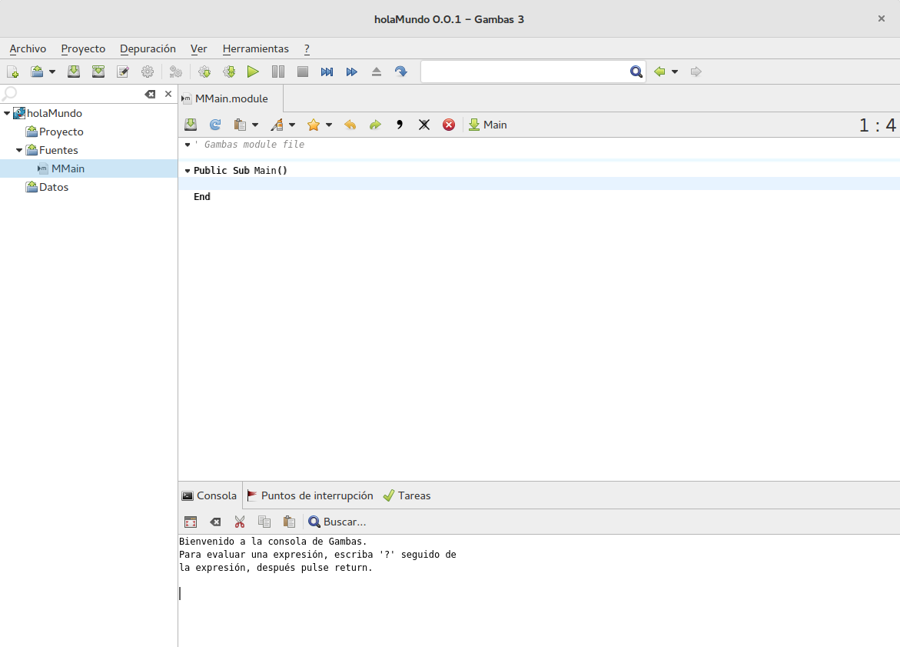

Introducción
Gambas (Gambas Almost Means Basic) es un lenguaje de programación de alto nivel libre
basado en BASIC y es distribuido bajo la licencia GNU GPL.
Permite crear formularios con botones de comandos, cuadros de texto y muchos otros controles y enlazarlos a bases de datos como MySQL, PostgreSQL o SQLite además de facilitar la creación de aplicaciones muy diversas como videojuegos (utilizando OpenGL), aplicaciones para dispositivos móviles (en desarrollo pero muy avanzado), aplicaciones de red (con manejo avanzado de protocolos HTTP, FTP, SMTP, DNS), entre otras.
La documentación oficial de Gambas contiene mucha información acerca de las funciones que existen en el lenguaje y la sintaxis para utilizarlas. Considere a la documentación a partir de hoy como su mejor y fiel amigo en el estudio y la realización de programas en Gambas.
Gambas permite escribir facilmente aplicaciones para la consola -en modo texto- y aplicaciones gráficas.
IDE de Gambas
La ventana principal de Gambas versión 3 tiene un aspecto como lo muestra la imágen:

Podemos observar en la imágen los elementos principales que componen Gambas, los cuales son los siguientes:
-
En la parte superior la barra de herramientas con botones para las acciones más comunes en el desarrollo de aplicaciones.
-
En la izquierda se encuentra el visor de los archivos que contiene el proyecto activo, en el se pueden abrir o cerrar todos los archivos que se hayan
creado o agregado al proyecto activo.
-
En la parte inferior se encuentra el visor de la consola. Todos los programas que se desarrollen para la consola desplegarán su respectivo resultado
en esta área.
-
Finalmente, en el centro de la pantalla se encuentra el editor de código para el archivo activo. Notese que este editor tiene sus botones de acciones
comunes y permite tener abiertos varios archivos a la vez y navegar entre ellos mediante pestañas.
Variables
Los programas manejan datos continuamente. Estos datos pueden ser de muchos tipos: números, letras, textos, etc., y cambiar a lo largo de la ejecución del
programa (en ese caso reciben el nombre de variables) o permanecer con un valor fijo durante todo el tiempo (entonces se denominan constantes). A los datos
que usa un programa se les denomina un nombre identificador.
Hay dos lugares donde se pueden declarar las variables, dependiendo del ámbito en el que se vayan a usar. Si se declaran dentro de una subrutina o función,
están disponibles para ser usadas dentro del ámbito correspondiente. Si se declaran al principio del archivo de código están disponibles para todo el
código de ese archivo, en todas sus subrutinas.
La sintaxis para declarar variables en Gambas es la siguiente:
Dim nombreVariable As tipoDeDato
La declaración de todas las variables en Gambas deben iniciar con la palabra clave Dim y finalizadas con el tipo de dato que se
desea declarar la variable. Observe que antes del tipo de dato es necesario escribir la palabara clave as.
Las variables son un contenedor de información y existen diferentes tipos de información que se pueden almacenar, a esto se le conoce como tipo de dato.
Los tipos de datos que existen en Gambas son los siguientes:
Boolean: es un tipo de dato que suele ser el resultado de una comparación. Solo acepta dos valores: True y False.Byte: representa un número entero positivo entre 0 y 255.Short: representa un número entero con valores posibles entre -32,768 y +32,767Integer: representa un número entero con valores posibles entre -2,147,483,648 y +2,147,483,647Long: representa un número entero con valores posibles entre: -9,223,372,036,854,775,808 y +9,223,372,036,854,775,807Single: representa un número real, con decimales, con valores posibles entre -1.7014118E+38 y +1.7014118E+38.Float: representa un número real, con decimales, con valores posibles entre -8.98846567431105E+307 y +8.98846567431105E+307Date: sirve para almacenar un valor de fecha y hora. Internamente, la fecha y hora se almacena en formato UTC, al devolver el dato se representa
en el formato local, según la configuración del ordenador.String: se usa para almacenar una cadena de texto. Se asignan mediante el uso de comillas dobles.Variant: significa cualquier tipo de dato, es decir, puede almacenar un Integer, Single, String, etc. Se debe evitar su uso porque ocupa más
memoria que los anteriores y los cálculos con Variant son mucho más lentos.Object: representa cualquier objeto creado con Gambas.
Constantes
En un programa es común tener parámetros que no cambian de valor durante la ejecución. Para estos casos resulta muy práctico utilizar constantes. Las constantes
se definen sólo al principio de un archivo de módulo o clase, no se pueden definir dentro de las subrutinas y funciones
La sintaxis es la siguiente:
{ Public | Private } Const nombreVariable As TipoDato = Valor constante
Ejemplo. Se declara una constante que tiene el valor constante del número pi.
Public Const p As Float = 3.141596
Escritura
En muchos programas es frecuentemente necesaria la entrada y salida de datos, para ello existen un par de funciones de entrada y salida. Para el caso de entrada, o bien
lectura, se utiliza la siguiente sintaxis.
Print [ # Flujo , ] Expresión [ { ; | ;; | , } Expresión ... ] [ { ; | ;; | , } ]
La instrucción Print permite imprimir expresiones y dirijirlos a un flujo de salida, que por defecto es la salida estándar (la pantalla).
Las expresiones que se pueden imprimir son variables, cadenas de caracteres y combinaciones de ellas.
Esta función permite algunas opciones en cuanto se imprimen las expresiones. Dichas opciones son las siguientes:
- Si se añade un punto y coma al final de la instrucción, se dejará el cursor en esa posición por lo que la siguiente impresión se hará justo en ese punto.
- Si no hay un punto y coma después de la expresión, se añade un caracter de "nueva línea" después de la última expresión.
- Si se utiliza una coma en lugar de un punto y coma, se añade un caracter de tabulación (código 9 ASCII) para separar las expresiones.
- Si hay un punto y coma doble, se añade un caracter de "espacio" entre las expresiones.
Ejemplo 1: La siguiente instrucción imprime el contenido de la variable x en pantalla y hace un salto de línea.
Print x
Ejemplo 2: La siguiente instrucción imprime el caracter x en pantalla y hace un salto de línea.
Print "x"
Ejemplo 3: La siguiente instrucción imprime la cadena de caracteres "Hola mundo cruel" en la pantalla, deja el cursor inmediatamente después del
ultimo caracter impreso.
Print "Hola mundo cruel.";
Ejemplo 4: La siguiente instrucción imprime la cadena de caracteres "Hola mundo cruel" en la pantalla, al final hace un salto de linea.
Print "Hola";; "mundo";; "cruel."
Ejemplo 5: La siguiente instrucción imprime una cadena de caracteres y el contenido de una variable en la pantalla. Si por ejemplo x=4,
la impresión en pantalla seria: "El contenido de la variable es 4."
Print "El contenido de la variable es";; x ; "."
Lectura
Para el caso de la lectura de información hacia el programa se utiliza la función Input con la siguiente notación:
Input [ # Flujo , ] Variable [ , Variable ... ]
Lee desde Flujo, y convierte elementos separados por caracteres de espacio o retornos de carro con la función Val antes de situar el
valor en las variables. Si no se especifica el flujo, se lee de la entrada estándar. Las variables deben ser declaradas antes de utilizarse con esta función.
Es posible leer varios datos con un solo Input, separando las variables con comas. Los valores se leerán uno a la vez y se guardarán en las variables en el orden
en que fueron escritas en la función. Las variables pueden ser de diferentes tipos, son independientes entre ellas.
Ejemplo 1. La siguiente función solicita un número y lo guarda en la variable x.
Input x
Ejemplo 2. La siguiente instrucción lee una cadena de caracteres y la guarda en la variable nombre.
Input nombre
Ejemplo 3. La siguiente instrucción guarda el nombre de una persona, su edad y su RFC.
Input nombre, edad, rfc
Operadores aritméticos, relacionales y lógicos
Operadores Aritméticos
Cuando se trata de trabajar con números, Gambas tiene las operaciones habituales en casi todos los lenguajes de programación. Para poder realizar operaciones
aritméticas necesitamos de operadores aritméticos. El resultado de una operación será un número.
| Operador |
Operación |
Ejemplo |
Resultado |
| ^ |
Potencia |
4^3 |
64 |
| * |
Multiplicación |
8.25*7 |
57.75 |
| / |
División |
15/4 |
3.75 |
| + |
Suma |
125.78 + 62.50 |
188.28 |
| - |
Resta |
65.30 - 32.33 |
32.97 |
| Mod |
Módulo (Residuo de la división) |
15 Mod 2 |
1 |
| Div |
División Entera |
17 Div 3 |
5 |
Operadores Relacionales
Los operadores relacionales permiten comparar dos operandos. Los resultados pueden ser números, alfanuméricos, constantes o variables. Las constantes o
variables pueden ser a su vez de tipo entero, real, caracter o cadena de caracteres. El resultado de una expresión con operadores relacionales es verdadero
o falso.
| Operador |
Operación |
Ejemplo |
Resultado |
= |
Igual que |
'Hola' = 'Lola' |
False |
<> |
Diferente de |
'a'<>'b' |
True |
< |
Menor que |
7<15 |
True |
> |
Mayor que |
22>11 |
True |
>= |
Menor o igual que |
22<=15 |
False |
>= |
Mayor o igual que |
35>=20 |
True |
Operadores Lógicos
Los operadores lógicos permiten formular condiciones complejas a partir de condiciones simples. Los operadores lógicos son de conjunción (o), disyunción (y) o
negación (no).
| Operador |
Operación |
Ejemplo |
Resultado |
Or |
Conjunción: O Lógica |
4>5 Or 6>5 |
True |
And |
Disyunción: Y Lógica |
4>5 Or 6>5 |
False |
Not |
Negación: No Lógico |
Not 4>5 |
True |
Jerarquía de Operaciones
Al evaluar expresiones que contienen operadores aritméticos debemos representar la jerarquía en el orden correcto. Es decir, si tenemos en una expresión más
de un operador, debemos aplicar primero el operador de mayor jerarquía, resolver esa operación y así sucesivamente.
| Operador |
() |
| Funciones y Subrutinas |
^ |
*, /, Div, Mod |
+, - |
=, <>, <, >, <=, >= |
Not |
And |
Or |
Es importante señalar que el operador () es un operador asociativo que tiene la prioridad más alta en cualquier lenguaje de programación.
La siguiente tabla muestra la jerarquía de los operadores aritméticos. Mientras más arriba en la tabla se encuentre el operador, mayor será su jerarquía;
mientras más abajo en la tabla se encuentre el operador, menor será su jerarquía.
Cuando se evalúa una expresión que tiene operadores aritméticos, lógicos y/o relacionales, Gambas lo resuelve de acuerdo a la jerarquía de las operaciones
comenzando con la mayor jerarquía hacia la menor. Si en algún momento hubiera empates, dos operaciones con la misma jerarquía, las realiza comenzando de
izquierda hacia la derecha.
Conversiones de datos
Gambas permite distintas conversiones de datos. La forma de hacer la conversión puede ser explícita o implícita. Son conversiones implícitas cuando el propio
intérprete de Gambas se encarga de gestionarlas. Por ejemplo:
Dim resultado As Single
Dim operando1 As Single
Dim operando2 As Integer
operando1 = 3.5
operando2 = 2
resultado = operando1 * operando2
En este caso, para poder realizar la multiplicación, el compilador convierte la variable operando2 a tipo Single.
Por otro lado, las conversiones explícitas las que deben hacer que el programador al escribir el código para poder realizar operaciones. Estas conversiones
se hacen mediante funciones que están incluidas en Gambas. Las funciones de conversión son las siguientes:
CBool(expresión): Convierte la expresión a un valor booleano, verdadero o falso. El resultado será falso si la expresión es falsa, el número
0, o una cadena de texto vacía o un valor nulo. Será verdadero en los demás casos. Por ejemplo:
- Devuelve
False las siguientes operaciones: Cbool(""), Cbool(0), Cbool(NULL)
- Devuelve
True las operaciones: Cbool(1), Cbool("Gambas")
CByte(expresión): Convierte la expresión en un valor tipo Byte. Primero se convierte la expresión a un número binario de 4 bytes. Si este
número es mayor a 255, se corta recogiendo los 8 bits menos significativos. Por ejemplo, Cbyte("17") devuelve 17, pero Cbyte(100000)
devuelve 160.CShort(expresión), CInt(expresión) o CInteger(expresión), y CLong(expresión): Convierten, respectivamente,
la expresión en un número tipo Short, Integer y Long. En el caso de CShort la conversión se realiza igual que
para CByte, produciendo resultados extraños si la expresión resulta en un número mayor a 32,767.CDate(expresión): Convierte la expresión en una fecha y sólo admite el formato mes/día/año.CSingle(expresión), CSng(expresión) y CFoat(expresión) o Cflt(expresión): Convierten, respectivamente, la
expresión en un número del tipo Single y Float. La expresión debe usar el punto (.) y no la coma (,) como
separador decimal.CStr(expresión): Convierte la expresión en una cadena de texto sin tomar en cuenta la configuración local. Por tanto, Str$(1.58)
devuelve la cadena de texto 1,58, independientemente de si la configuración local indica que el separador decimal es el punto o la coma, o
CStr(CDate("09/06/1972 01:45:12")) devuelve "/06/1972 01:45:12"Str$(expresión): Convierte la expresión en una cadena de texto, teniendo en cuenta la configuración local. Por tanto, Str$(1.58)
devuelve la cadena de texto 1,58, si la configuración local está en español. Del mismo modo, Str$(CDate("09/06/1972 01:45:12")) devuelve
"/06/1972 01:45:12" si la configuración local está en español.Val(expresión): Convierte una cadena de texto en un tipo Boolean, Date o alguno de los tipos numéricos, dependiendo
del contenido de la expresión. Val es la función opuesta de Str$ y, por tanto, también tiene en cuenta la configuración local de
la computadora en la que se ejecuta. Intenta convertir la expresión en un tipo Date, si no puede en un número con decimales, si tampoco puede
en un número entero y si, finalmente, tampoco puede la convierte en un tipo Boolean.
Funciones Especiales
Aparte de los operadores existen funciones matemáticas para realizar cálculos complejos o especiales:
Abs(número): devuelve el valor absoluto de un número.Dec(número): decrementa en una unidad al número.Frac(número): devuelve la parte no entera de un número.Inc(número): incrementa en una unidad el númeroInt(número): devuelve la parte entera del número.Max(número1, número2, ...): devuelve el número mayor.Min(número1, número2, ...): devuelve el número menor.Round(número, decimales): redondea un número con los decimales deseados.Sgn(número): devuelve el signo de un número.Rnd([mínimo], [máximo]): devuelve un número aleatorio comprendido entre mínimo y máximo. Si la función es
invocada sin argumentos, se devuelve un número aleatorio entre 0 y 1. Si solo se expresa un valor, se devuelve un número entre 0 y ese número.
Antes de utilizar esta función es necesario ejecutar la instrucción Randomize para generar una semilla, de no ser así se obtendrá
siempre el mismo número en sucesivas ejecuciones de Rnd.